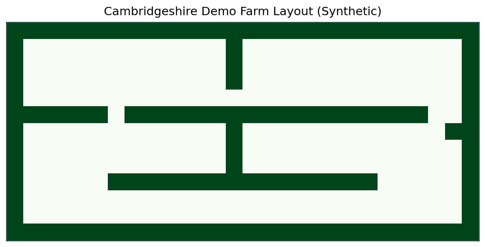
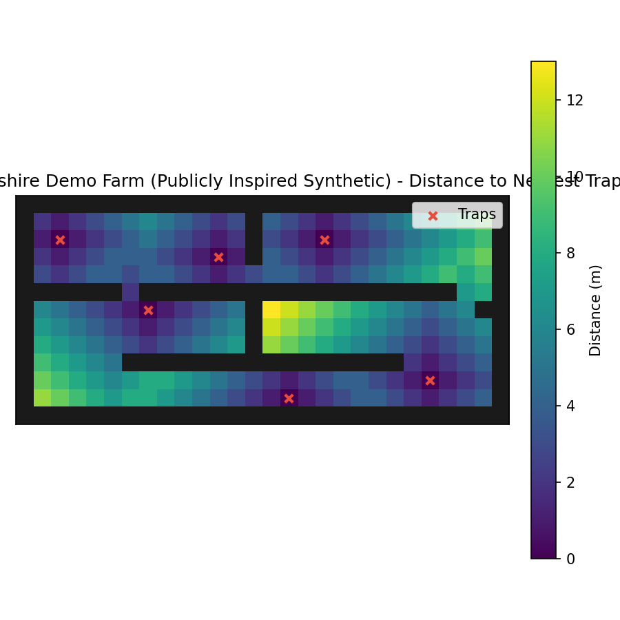

0:00-0:30
Auto-connect API and confirm health.
BioPath
Pitch Studio
Decision Intelligence for Farm Pest Control
BioPath turns layout complexity into an execution-ready trap placement plan with simulation-backed proof, built for farm teams, pest-control operators, and funding reviewers.
0:00-0:30
Auto-connect API and confirm health.
0:30-1:00
Run solve on the Cambridge-style map.
1:00-1:30
Run benchmark and read uplift.
1:30-2:00
Switch Pitch Mode and deliver Ask.
Cambridge farm pilot funding application is in progress in parallel with this pitch cycle.



Show judges exactly what users do and what measurable effect they get in one run.
Connect API and run solve to generate the first executable trap plan.
Configure API, tune parameters, and run solve/benchmark from one workspace.
Auto-detection order: query param -> saved value -> config.json.
Default map is a publicly inspired Cambridge-region synthetic layout.
Tip: Solve first, then benchmark for proof-grade uplift.
The exact numbers you can quote during pitch.
Benchmark Uplift: n/a
Random Baseline Mean: n/a
Benchmark Status: No benchmark yet
Summary not availableNo benchmark yet.
Speak in this order: Problem -> Solution -> Proof -> Ask.
Manual trap placement is inconsistent, hard to standardize, and misses bottlenecks in complex farm layouts.
BioPath converts a simple map into optimized trap coordinates and a reproducible placement plan.
We benchmark against random baseline with Monte Carlo validation and report robust capture metrics per run.
We ask for 2 pilot introductions, a small PoC budget, and practical data access for an 8-week farm trial; in parallel, we are applying for Cambridge farm funding and Ceres/LINCAM-aligned translational pathways.
Open any run to quickly reference older evidence.